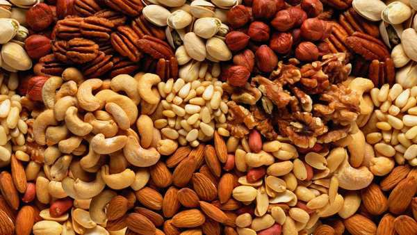
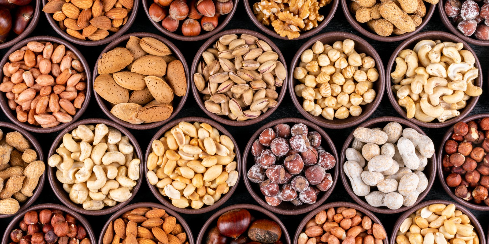
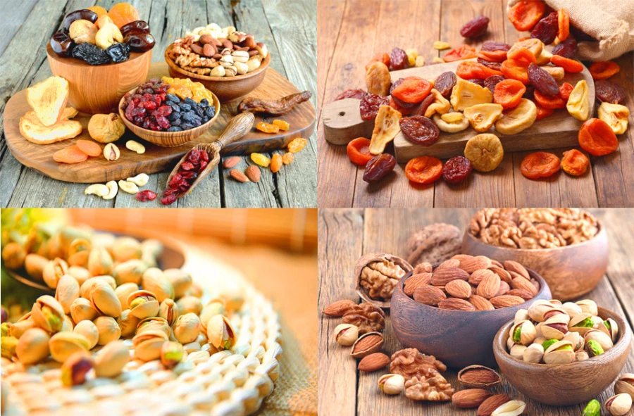

Горіхи. Їх види та користь для організму.
Горіхи— це справжній скарб природи, який поєднує в собі унікальний смак, неймовірну користь для здоров'я та універсальність у кулінарії. Здавна вони були символом достатку й довголіття, а сьогодні науковці підтверджують: регулярне вживання горіхів покращує роботу серця, нормалізує рівень холестерину, підтримує мозкову активність і допомагає контролювати вагу. Кожен вид — від мигдалю та волоських до кеш'ю й пеканів — має свій характерний профіль поживних речовин: поліненасичені жирні кислоти Омега-3, антиоксиданти, вітаміни групи E, B та мінерали як магній, цинк і селен.
Види горіхів
Горіхи становлять надзвичайно різноманітну групу природних продуктів, які вирізняються не лише смаковими якостями, а й ботанічною будовою та походженням. Ботанічно справжніми горіхами вважаються лише плоди дерев із твердою однорідною шкаралупою, що не розтріскується при дозріванні, тоді як більшість кулінарних горіхів — це насіння, дереволисті або бобові з жорсткою оболонкою. Їхня різноманітність зумовлена географічним походженням: від субтропічних регіонів Середземномор'я та Близького Сходу до тропічних лісів Латинської Америки та вологих плантацій Австралії. Ця різниця в кліматі впливає на розмір, форму, колір шкаралупи та внутрішнього ядра — від компактних круглих форм із тонкою шкірочкою до гігантських подовжених плодів із товстою захисною оболонкою. Смакові профілі горіхів варіюються від вершково-масляних і солодкуватих ноток до землистих, хвойних або з легкою гіркуватістю, що робить їх ідеальними для різних кулінарних традицій. Текстура може бути хрусткою, кремовою чи волокнистою, а вміст олії — від 40% у легких сортів до 75% у наймаслянистіших. У кулінарії горіхи використовують у сирому, обсмаженому, подрібненому вигляді чи як пасту: вони збагачують салати, соуси, десерти, випічку та навіть замінюють тваринні жири в рослинних стравах. Зберігання вимагає прохолоди, щоб уникнути прогіркнення жирів, а очищення — від простого розколювання до замочування для видалення гіркоти. Різноманіття сортів дозволяє обирати залежно від мети: легкі для снеків, маслянисті для кремів, протеїнові для енергетичних батончиків. Незалежно від виду, горіхи — це універсальний інгредієнт, що поєднує традиції різних культур і сучасні гастрономічні тренди.
Користь для здоров’я
Горіхи — це концентроване джерело поживних речовин, яке науковці називають суперфудом завдяки комплексному впливу на організм. Вони містять 45–75% корисних жирів, переважно поліненасичених Омега-3 та Омега-6 кислот, які знижують рівень ЛПНЩ-холестерину, розширюють судини, запобігають атеросклерозу та нормалізують тиск. Рослинний білок (15–30%) повноцінно засвоюється, підтримує м'язову масу та ситість, що допомагає в контролі ваги — дослідження показують, що регулярне вживання горіхів асоціюється зі зниженням маси тіла попри високу калорійність. Клітковина (5–10 г на 30 г порцію) покращує перистальтику кишківника, виводить токсини та стабілізує рівень цукру в крові, зменшуючи ризик діабету 2 типу. Антиоксиданти — вітамін E, поліфеноли, ресвератрол — борються з вільними радикалами, уповільнюють старіння клітин, захищають шкіру від УФ-пошкоджень і підтримують молодість. Мінерали в біодоступній формі — магній розслаблює м'язи та нервову систему, цинк зміцнює імунітет і тестостерон, селен активує щитоподібну залозу, фосфор і кальцій укріплюють кістки. Вітаміни групи B (B1, B6, фолати) покращують метаболізм, енергію та когнітивні функції, знижуючи ризик деменції. Горіхи корисні для серця (знижують ризик інфаркту на 30–50%), мозку (Омега-3 як ДГК для нейронів), травлення та гормонального балансу.
Скільки горіхів можна їсти в день?
Оптимальна щоденна норма вживання горіхів становить 20-30 грамів — це приблизно жменя, яка забезпечує максимум користі без ризику переїдання. Така порція містить 150-200 ккал, але завдяки високому вмісту клітковини, білка та здорових жирів створює відчуття ситості, допомагаючи контролювати апетит і вагу. Наукові дослідження показують, що регулярне споживання саме в цих межах знижує ризик серцево-судинних захворювань, покращує рівень холестерину та стабілізує цукор у крові, не перевантажуючи травну систему. Ця кількість підходить для більшості здорових дорослих: жінкам рекомендують 20-25 г, чоловікам — до 30-40 г залежно від фізичної активності. Спортсменам чи людям з інтенсивним графіком можна збільшити до 40-50 г, але верхня межа для всіх — 50 грам на день. Понад цю норму (особливо 60-100 г) може призвести до набору ваги через високу калорійність (500-750 ккал на 100 г), діареї від надлишку клітковини, навантаження на печінку чи навіть нудоти через концентрацію мікроелементів.
Застосування
Горіхи — універсальний інгредієнт, який збагачує страви смаком, текстурою та поживними речовинами, перетворюючи звичайну їжу на гастрономічні шедеври. Завдяки високому вмісту олій, білка та аромату вони використовуються в сирому, обсмаженому, подрібненому вигляді чи як пасти, адаптуючись до кухонь різних народів — від середземноморської до азійської та латиноамериканської. У перших стравах і салатах подрібнені горіхи додають хрускіт і насиченість: класичне поєднання з зеленню, сиром, фруктами чи м'ясом створює баланс смаків. У соусах і заправках вони замінюють вершкове масло — кремова консистенція пасти з горіхів ідеальна для песто, хумусу, сатсебелі чи азійських дрессингів. Випічка та десерти просто немислимі без них: від ніжних печива й кексів до багатошарових тортів, горіхових кремів і шоколадних батончиків, де маслянистість горіхів підсилює карамельні нотки. У основних стравах горіхи доповнюють м'ясо, рибу, крупи та овочі: азійські карі з кремовою текстурою, традиційні плови, запіканки чи веганські котлети набувають багатства смаку. Особливо популярні горіхові пасти — від класичної арахісової до екзотичних з макадамією чи кеш'ю, які мажуть на хліб, додають у смузі чи використовують як основу для соусів. У снекінг та перекуси сирі чи злегка обсмажені горіхи — ідеальна альтернатива чипсам, особливо в міксах з сухофруктами чи спеціями. Поза кухнею горіхи знаходять застосування в косметології: олії з них (мигдалева, кокосова) зволожують шкіру, живлять волосся, слугують основою скрабів і масок. У народній медицині їх застосовують для зміцнення імунітету, лікування анемії чи покращення травлення — замочені горіхи легше засвоюються. У промисловості горіхові пасти входять до складу шоколаду, косметики, фармацевтики та навіть кормів для тварин.
Цікаві факти
Горіхи приховують безліч захопливих секретів, які поєднують ботаніку, історію, культуру та навіть космос. Не всі «горіхи» є горіхами ботанічно — більшість популярних це насіння, дереволисті чи бобові: мигдаль виростає з кісточок персика, а арахіс дозріває під землею як бобова культура. Найдорожчий горіх світу — макадамія коштує $25-50 за кг через складний збір вручну в Австралії та низьку врожайність, їхня кремова текстура надихнула кондитерів на елітні десерти. У Стародавній Греції волоські горіхи називали «горіхами Юпітера» через мозкоподібну форму ядер — вірили, що вони лікують психічні розлади, а сьогодні наука підтверджує користь Омега-3 для мозку. Бразильський горіх — справжня селенова бомба: один горіх містить 100% добової норми, корисного для щитоподібної залози, але 5-10 штук викликають токсикоз з випадінням волосся. Фісташки «посміхаються» — напіввідкрита шкаралупа розкривається тиском ядра при дозріванні, полегшуючи збір, у Персії їх їли закохані як символ щастя.Найбільший горіх — кокос (насіння пальми), найменший — кеш'ю (1-2 см), а шкаралупа кеш'ю токсична і спалюється окремо. Алергія на горіхи — найнебезпечніша, у 30% випадків викликає анафілактичний шок, тому в США продукти мітять знаком з горіхом у трикутнику.